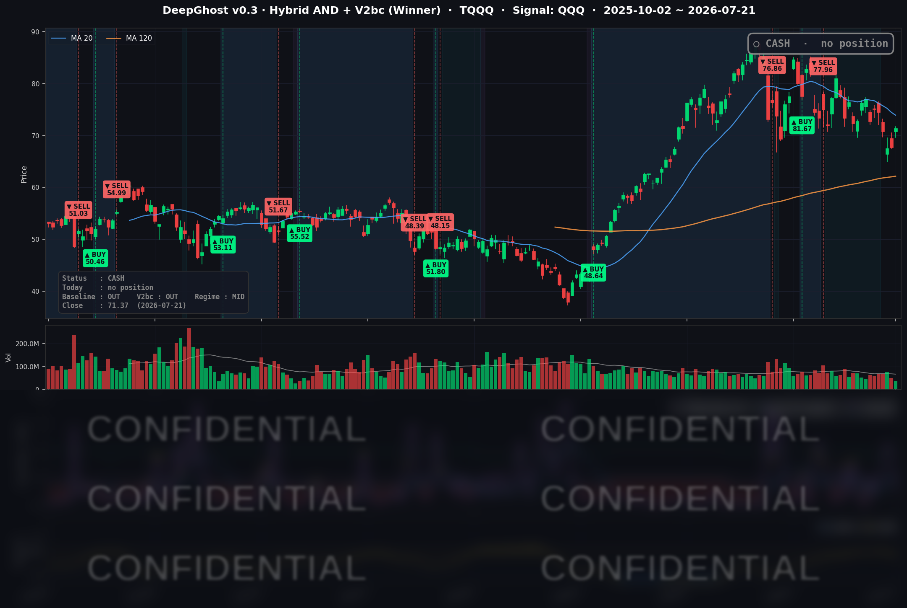

👻 매일 시그널과 히스토리를 홈페이지에서 한눈에 → www.ghostai.co.kr
마이크론·인텔이 이끈 반도체 랠리로 나스닥이 3거래일 하락을 끊고 반등했지만, 금리가 크게 올랐습니다. 데드캣 바운스 측면이 강해 보입니다. 여전히 심리는 안좋고 걱정이 많은 시장입니다.
📊 오늘의 매매 신호
| 항목 | 내용 |
|---|---|
| 오늘 할 일 | ✅ 아무것도 안 해도 됩니다 |
| 포지션 상태 | 💵 현금 보유 중 (OUT OF POSITION) |
| 현금 보유 기간 | 2026-06-25 ~ 2026-07-21 (26일) |
| TQQQ 종가 | $71.37 (+5.50%) |
TQQQ 시그널 — OUT OF POSITION
현재 상태: 현금 보유 중 | 6/25 매도 이후 관망 지속

이날 나스닥은 반도체 강세를 앞세워 QQQ 기준 +1.85% 급등했고, 3배 레버리지 상품인 TQQQ는 +5.50%나 뛰었습니다. 그럼에도 공식 전략의 레버리지 트레이드(QQQ 시그널 → TQQQ)는 현금을 그대로 유지했습니다. 모델 내부 신호는 하루 만에 "매수 방향"으로 급하게 돌아섰습니다. 하지만 전략은 하루짜리 급변에 곧바로 반응하지 않고, 며칠에 걸친 확인 절차를 요구합니다.
동시에 최근 시장 과열도를 재는 내부 지표는 한 단계 더 물러났습니다. 청산 압력이 있던 자리에서는 빠져나왔지만, 신규 진입 쪽으로도 아직 다가서지 못한 전형적인 "중립 대기" 국면입니다. 10년물 금리가 4.6%대를 유지하고, 유가·중동 지정학 리스크에 다음 주 FOMC까지 겹친 상황에서 확인되지 않은 하루짜리 신호에 반응하지 않습니다. 앞으로 며칠간 신호가 같은 방향을 유지하는지가 다음 관전 포인트입니다.
오늘 미국 시장 — 시황 요약
지수 마감
| 지수 | 종가 | 등락률 |
|---|---|---|
| S&P 500 | 7,509.20 | +0.89% |
| 나스닥 종합 | 25,837.21 | +1.29% |
| 다우 존스 | 52,224.64 | +0.74% |
| 러셀 2000 | 2,987.40 | +1.53% |
4대 지수가 3거래일 연속 하락을 끊고 일제히 반등했습니다. 나스닥(+1.29%)이 반도체 강세를 앞세워 대형 벤치마크 중 가장 크게 올랐고, 소형주인 러셀 2000도 +1.53%로 대형주 못지않게 강했습니다. 특정 섹터만이 아니라 지수 폭이 넓은 광범위한 반등이었다는 신호입니다.
국채 금리 동향
| 만기 | 수익률 | 전일 대비 |
|---|---|---|
| 3개월 | 3.730% | +2.5bp |
| 5년 | 4.370% | +4.2bp |
| 10년 | 4.628% | +3.0bp |
| 30년 | 5.130% | +1.2bp |
금리는 만기 전 구간이 소폭 올랐습니다. 특히 5년물(+4.2bp)이 가장 크게 오르며 임박한 금리 인하 기대가 살짝 뒤로 밀렸습니다. 다만 10년물과 3개월물의 스프레드는 +89.8bp로 역전 없는 정상적인 우상향 커브를 유지해, 시장은 여전히 "완만한 인하 + 경기 연착륙" 시나리오를 이어가고 있습니다. 그럼에도 위험자산은 이날 금리 상승을 개의치 않고 반도체 실적 모멘텀에 반응했습니다. 다만 10년물 4.63%, 30년물 5.13%라는 절대 금리 레벨은 성장주 밸류에이션의 상단을 누르는 부담 요인으로 남아 있습니다.
연준 발언 & 금리 패스
연준의 미셸 보먼 감독 담당 부의장은 "이제 정책금리 조정을 고려할 시점"이라며 조건이 충족되면 7월 인하에 찬성할 수 있다는 비둘기파적 신호를 냈습니다. 다만 시장 전체의 확률에는 큰 변화가 없어, 7월 29,30일 FOMC에서는 동결(약 77%) 전망이 우세합니다. 위원 간 이견이 드러난 가운데 단기 금리가 소폭 오른 점은 임박한 인하 기대가 한 발 물러섰음을 시사합니다. 결국 다음 방향은 이번 FOMC의 성명과 점도표 톤이 좌우할 전망입니다.
오늘의 핵심 이슈
- 메모리·반도체 실적 랠리가 지수를 견인 — 마이크론(MU)이 +12.17% 급등하며 커버리지 최대 상승을 기록했습니다. HBM 등 AI 데이터센터 메모리 수요 서프라이즈가 나스닥 반등의 원동력이었습니다.
- 인텔(INTC) +8.64%, $100 재탈환 — 7월 23일 실적 발표를 앞두고 파운드리 관련 호재(포티넷 첫 사이버보안 고객, 애플·MSFT의 18A 초기 설계 파트너 합류, ASML 장비 양산 확인)가 겹치며 기대성 랠리가 나왔습니다. 실적 발표 자체는 아직 전이라는 점에 유의해야 합니다.
- 어닝 시즌 호조가 심리를 지지 — S&P 500 기보고 종목의 약 88%가 순이익 컨센서스를 상회했습니다. 3M·GM 등 비기술 대형주의 실적 호조도 지수 폭 확대에 기여했습니다.
변동성 & 투자심리
- VIX(공포지수): 17.05로 전일(18.65) 대비 8.58% 하락했습니다. 최근 고점을 찍고 되돌려 위험선호 회복과 정합적인 흐름입니다.
- 공포탐욕 지수(CNN Fear & Greed): 41(공포) — 지수는 반등했지만 심리 게이지는 아직 중립 하단의 공포 구간에 머물러 있습니다. 반등을 심리가 완전히 따라잡지 못한 초기 국면으로, "올랐지만 아직 신중한 시장"의 온도를 보여줍니다.
매크로 & 원자재
중동 긴장이 재점화되며 안전자산과 유가가 동반 강세를 보였습니다. WTI는 $84.71(+1.78%), 브렌트유는 $91.58(+2.65%), 금은 $4,088.00(+1.94%)로 마감했습니다. 홍해(Red Sea) 긴장에 따른 공급 리스크와 안전자산 수요가 함께 반영된 결과입니다. 다만 주식 시장은 이러한 지정학 악재를 소화하며 상승해, 이날은 리스크 이벤트보다 실적 모멘텀이 우위였습니다.
주요 종목 동향
| 종목 | 전일 종가 | 당일 종가 | 등락률 | 비고 |
|---|---|---|---|---|
| MU | 865.46 | 970.82 | +12.17% | 실적 서프라이즈, 데이터센터 메모리 수요 급증. 커버리지 최대 상승 |
| INTC | 97.06 | 105.45 | +8.64% | $100 재탈환. 파운드리 호재 겹친 기대 랠리(7/23 실적 앞둠) |
| TSLA | 369.57 | 378.93 | +2.53% | 위험선호 랠리 동참 |
| AVGO | 378.16 | 386.50 | +2.21% | 반도체 강세 동조 |
| NVDA | 203.28 | 207.29 | +1.97% | AI 반도체 리더십 지속 |
| QCOM | 170.32 | 173.50 | +1.87% | 반도체 그룹 강세 |
| NFLX | 67.60 | 68.67 | +1.58% | 미디어 반등 |
| AAPL | 326.59 | 327.74 | +0.35% | 소폭 상승, 상대적 보합권 |
| META | 645.85 | 643.81 | −0.32% | 플랫폼주 상대 소외 |
| AMZN | 249.99 | 247.55 | −0.98% | 대형 플랫폼 로테이션 뒤편 |
| MSFT | 402.29 | 397.75 | −1.13% | 소프트웨어 대형주 약세 |
| GOOGL | 351.99 | 347.15 | −1.38% | 커버리지 최대 하락, 반도체 로테이션 반대편 |
이날은 자금이 반도체·메모리로 몰리면서, 반대로 대형 소프트웨어·플랫폼주(GOOGL·MSFT·AMZN·META)는 상대적으로 소외됐습니다. "무엇이 오르고 무엇이 쉬었나"의 대비가 뚜렷했던 섹터 로테이션의 하루였습니다.
Ghost.AI — Quantitative AI Investment
Model: DeepGhost v0.3 | Transformer-Based Deep Learning
Coverage: 13 tickers | Updated every trading day after US market close
⚠️ 본 자료는 정보 제공 목적으로만 작성되었으며 투자 권유가 아닙니다. 모든 투자의 책임은 투자자 본인에게 있습니다. 과거 성과가 미래 수익을 보장하지 않습니다.
[유의사항]
- 본 서비스는 불특정 다수를 대상으로 발행되는 단방향 정보 제공 서비스이며, 투자자 개인의 재산 상황·투자 목적·위험 선호도를 반영한 개별 투자 조언이 아닙니다.
- 고스트에이아이 주식회사는 고객과 쌍방향 의사소통(개별 상담, 맞춤형 자문 등)을 제공하지 않습니다.
- 본 콘텐츠는 투자 권유 또는 매매 주문의 청약·청약의 권유에 해당하지 않으며, 최종 투자 판단 및 그에 따른 손익의 책임은 전적으로 투자자 본인에게 있습니다.
고스트에이아이 주식회사